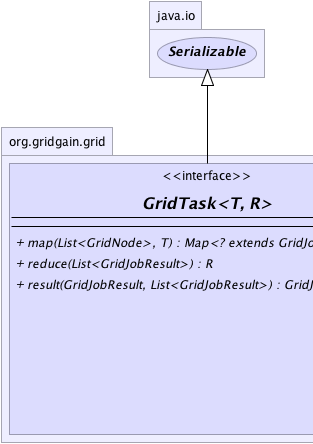
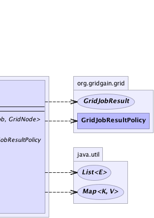

|
|

|

|
|

|

|

|
GridGain™ 3.6.0c
Community Edition |
|||||||||
| PREV CLASS NEXT CLASS | FRAMES NO FRAMES | |||||||||
| SUMMARY: NESTED | FIELD | CONSTR | METHOD | DETAIL: FIELD | CONSTR | METHOD | |||||||||
T - Type of the task argument that is passed into map(List, Object) method.R - Type of the task result returning from reduce(List) method.public interface GridTask<T,R>
Grid task interface defines a task that can be executed on the grid. Grid task is responsible for splitting business logic into multiple grid jobs, receiving results from individual grid jobs executing on remote nodes, and reducing (aggregating) received jobs' results into final grid task result.
Grid.deployTask(Class) method), however if task does not specify
its name explicitly via @GridTaskName annotation, it
will be auto-deployed first time it gets executed.
GridTaskSession).
map(List, Object). This
method is responsible for splitting business logic of grid task into
multiple grid jobs (units of execution) and mapping them to
grid nodes. Method map(List, Object) returns
a map of with grid jobs as keys and grid node as values.
GridCollisionSpi) which will determine how a job will be executed
on the remote node (immediately, buffered or canceled).
result(GridJobResult, List)
will be called for each received job result. The policy returned by this method will
determine the way task reacts to every job result:
GridJobResultPolicy.WAIT policy is returned, task will continue to wait
for other job results. If this result is the last job result, then
reduce(List) method will be called.
GridJobResultPolicy.REDUCE policy is returned, then method
reduce(List) will be called right away without waiting for
other jobs' completion (all remaining jobs will receive a cancel request).
GridJobResultPolicy.FAILOVER policy is returned, then job will
be failed over to another node for execution. The node to which job will get
failed over is decided by GridFailoverSpi SPI implementation.
Note that if you use GridTaskAdapter adapter for GridTask
implementation, then it will automatically fail jobs to another node for 2
known failure cases:
GridJobResult.getException()
method will return an instance of GridTopologyException exception.
GridJobResult.getException() method will return an instance of
GridExecutionRejectedException exception.
result(GridJobResult, List)
method returned GridJobResultPolicy.REDUCE policy, method reduce(List)
is called to aggregate received results into one final result. Once this method is finished the
execution of the grid task is complete. This result will be returned to the user through
GridTaskFuture.get() method.
GridTaskSessionResourceGridInstanceResourceGridLoggerResourceGridHomeResourceGridExecutorServiceResourceGridLocalNodeIdResourceGridMBeanServerResourceGridMarshallerResourceGridSpringApplicationContextResourceGridSpringResource
GridTask comes with several convenience adapters to make the usage easier:
GridTaskAdapter provides default implementation for GridTask.result(GridJobResult, List)
method which provides automatic fail-over to another node if remote job has failed
due to node crash (detected by GridTopologyException exception) or due to job
execution rejection (detected by GridExecutionRejectedException exception).
Here is an example of how a you would implement your task using GridTaskAdapter:
public class MyFooBarTask extends GridTaskAdapter<String, String> {
// Inject load balancer.
@GridLoadBalancerResource
GridLoadBalancer balancer;
// Map jobs to grid nodes.
public Map<? extends GridJob, GridNode> map(List<GridNode> subgrid, String arg) throws GridException {
Map<MyFooBarJob, GridNode> jobs = new HashMap<MyFooBarJob, GridNode>(subgrid.size());
// In more complex cases, you can actually do
// more complicated assignments of jobs to nodes.
for (int i = 0; i < subgrid.size(); i++) {
// Pick the next best balanced node for the job.
jobs.put(new MyFooBarJob(arg), balancer.getBalancedNode())
}
return jobs;
}
// Aggregate results into one compound result.
public String reduce(List<GridJobResult> results) throws GridException {
// For the purpose of this example we simply
// concatenate string representation of every
// job result
StringBuilder buf = new StringBuilder();
for (GridJobResult res : results) {
// Append string representation of result
// returned by every job.
buf.append(res.getData().string());
}
return buf.string();
}
}
GridTaskSplitAdapter hides the job-to-node mapping logic from
user and provides convenient GridTaskSplitAdapter.split(int, Object)
method for splitting task into sub-jobs in homogeneous environments.
Here is an example of how you would implement your task using GridTaskSplitAdapter:
public class MyFooBarTask extends GridTaskSplitAdapter<Object, String> {
@Override
protected Collection<? extends GridJob> split(int gridSize, Object arg) throws GridException {
List<MyFooBarJob> jobs = new ArrayList<MyFooBarJob>(gridSize);
for (int i = 0; i < gridSize; i++) {
jobs.add(new MyFooBarJob(arg));
}
// Node assignment via load balancer
// happens automatically.
return jobs;
}
// Aggregate results into one compound result.
public String reduce(List<GridJobResult> results) throws GridException {
// For the purpose of this example we simply
// concatenate string representation of every
// job result
StringBuilder buf = new StringBuilder();
for (GridJobResult res : results) {
// Append string representation of result
// returned by every job.
buf.append(res.getData().string());
}
return buf.string();
}
}
GridTask for basic split/aggregate logic refer to
HelloWorld Task Example.
For example on how to use GridTask with automatic grid-enabling via
@Gridify annotation refer to
Gridify HelloWorld Example.
| Wiki | |
| Forum |
|  |  |
| Method Summary | |
|---|---|
Map<? extends GridJob,GridNode> |
map(List<GridNode> subgrid,
T arg)
This method is called to map or split grid task into multiple grid jobs. |
R |
reduce(List<GridJobResult> results)
Reduces (or aggregates) results received so far into one compound result to be returned to caller via GridTaskFuture.get() method. |
GridJobResultPolicy |
result(GridJobResult res,
List<GridJobResult> rcvd)
Asynchronous callback invoked every time a result from remote execution is received. |
| Method Detail |
|---|
@Nullable Map<? extends GridJob,GridNode> map(List<GridNode> subgrid, @Nullable T arg) throws GridException
GridException - If mapping could not complete successfully. This exception will be
thrown out of GridTaskFuture.get() method.arg - Task execution argument. Can be null. This is the same argument
as the one passed into Grid#execute(...) methods.subgrid - Nodes available for this task execution. Note that order of nodes is
guaranteed to be randomized by container. This ensures that every time
you simply iterate through grid nodes, the order of nodes will be random which
over time should result into all nodes being used equally.
null or empty map
is returned, exception will be thrown.
GridJobResultPolicy result(GridJobResult res,
List<GridJobResult> rcvd)
throws GridException
GridJobResultPolicy for more information about result policies.
GridException - If handling a job result caused an error. This exception will
be thrown out of GridTaskFuture.get() method.res - Received remote grid executable result.rcvd - All previously received results. Note that if task class has
GridTaskNoResultCache annotation, actual job result won't be cached
and GridJobResult.getData() method will return null.
@Nullable R reduce(List<GridJobResult> results) throws GridException
GridTaskFuture.get() method.
Note, that if some jobs did not succeed and could not be failed over then the list of results passed into this method will include the failed results. Otherwise, failed results will not be in the list.
GridException - If reduction or results caused an error. This exception will
be thrown out of GridTaskFuture.get() method.results - Received results of broadcasted remote executions. Note that if task class has
GridTaskNoResultCache annotation, actual job results won't be cached
and GridJobResult.getData() methods will return null.
|
GridGain™ 3.6.0c
Community Edition |
|||||||||
| PREV CLASS NEXT CLASS | FRAMES NO FRAMES | |||||||||
| SUMMARY: NESTED | FIELD | CONSTR | METHOD | DETAIL: FIELD | CONSTR | METHOD | |||||||||
|
GridGain - Real Time Big Data
|
|
|
|